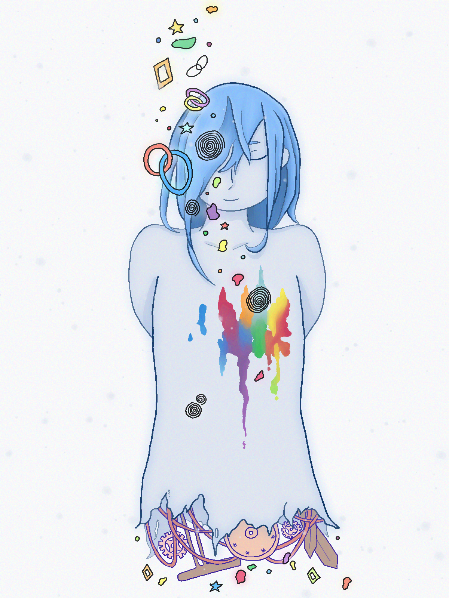
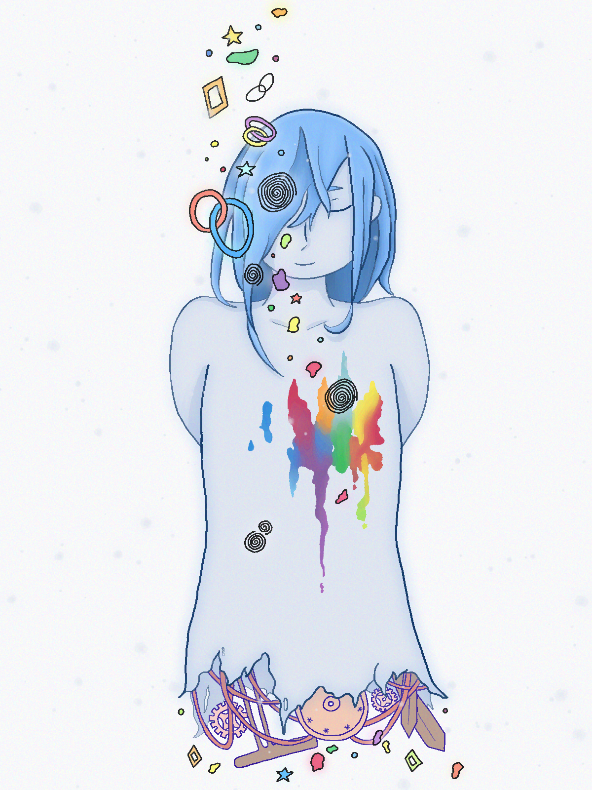
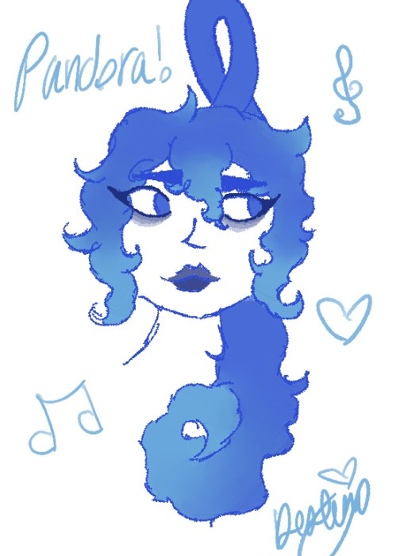
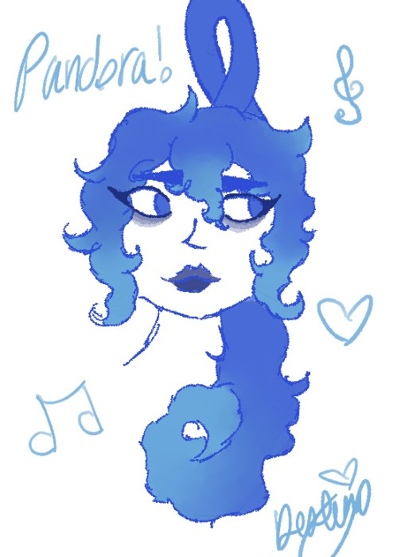
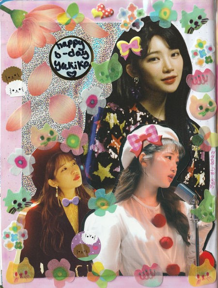
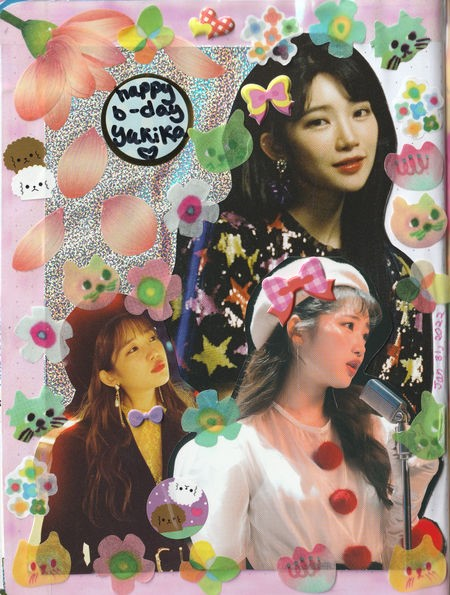

a rainbow cat i did for more portfolio-ish site of mine! :p

a collage of kpop band lucy done with the inclusions from blue


 

inspired by siinamota's PV of halo

22.jul.23 - guys i have not opened clip studio paint in like 6 months... i've been wanting to draw so badly lately but i just have been so unmotivated
today in particular i was just feeling very anxious. but i remember seeing this pic of a hello kitty plush with a mcdonals uniform and i fell so in love with it.
so i decided to doodle her!!!! like i didnt have anything in mind for her but i was just feeling so horrible that i thought that maybe drawing this silly ass hello kitty toy would help me calm down. and i will be honest. it really did calm me down.
i guess that i eventually got really focused in the drawing that i just forgot i was feeling anxious (over nothing btw idk whats happening) in the first place
hello kitty is so adorable and wholesome to me. i think she would be the happiest fast food worker in the world. anyway thank you hello kitty


08.dec.22 - based off siinamota's halo PV.
this is the first of three pieces i want to make based off this song's pv. its one of my favorite songs by siinamota because of how haunting and melancholic it sounds.i wanted to create something that would show how i view what's happening to the protagonist while they are saying these things since the video and song are pretty vague. i also just wanted to caption the feeling of the PV and song. it is one of my favorite songs from siinamota.
one day i was bored out of my ass so i make depression cherry a custom made booklet so i could read along the lyrics as the CD plays :) this album includes a booklet but it only has pictures of roses, no lyrics.
obviously inspired by the original booklet, and the whole red and rose theming this thing has going on. none of the pictures i used in the making of this are mine and i basically got them from google... all i did was put it all together.
you can download the .docx file and print it yourself here!
things used: this youtube video on how to make an album booklet, photopea, and ms word for printing and formatting.


 



 
